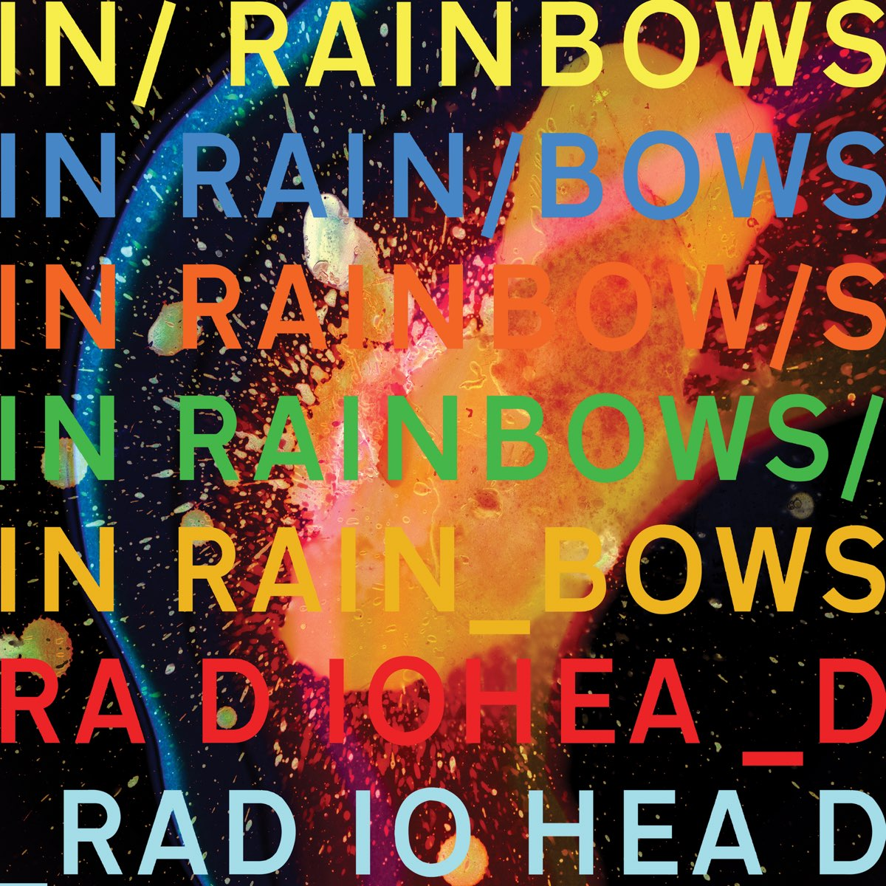

In Rainbows: Radiohead's Most Human Album
Jan 09, 2026
Tracklist
- 15 Step 3:47
- Bodysnatchers 4:34
- Nude 4:07
- Weird Fishes/Arpeggi 4:34
- All I Need 3:48
- Faust Arp 2:11
- Reckoner 4:26
- House of Cards 5:34
- Jigsaw Falling Into Place 4:01
- Videotape 4:19
In Rainbows opens with the restless, jittery drums of "15 Step," setting an uneasy but compelling tone from the start. Released in 2007, this was Radiohead moving away from the cold, electronic sound of Kid A and into something more human and direct. The album feels warmer and more intimate, though it's still uncomfortable at times. Over ten tracks, it explores the messy reality of relationships: wanting closeness, fearing distance, and dealing with vulnerability. "Weird Fishes" is a perfect example: it starts quiet and gradually builds into an immersive wall of sound that mirrors the feeling of being overwhelmed by emotion.
One of the main themes of In Rainbows is that real human connection is fragile and temporary, but still meaningful. This idea comes through clearly in the song "Reckoner," where Thom Yorke sings, "Because we separate like ripples on a blank shore / In rainbows." The imagery suggests that relationships, like ripples, eventually fade away. However, the idea of "rainbows" implies that even brief moments of connection can still be beautiful and worth experiencing. This theme also appears in "All I Need," which expresses emotional dependence and longing, showing how vulnerability can be both painful and honest. Rather than promising permanence or happy endings, the album accepts emotional risk as part of being human.
In Rainbows is my favorite Radiohead album because it balances experimentation with emotional clarity. While some of their other albums can feel distant or difficult to connect with, this one feels more grounded and accessible. The songs reveal more details over time, especially through subtle production choices and layered instrumentation that reward repeated listening. I would recommend this album to people who enjoy music that explores complex emotions without offering simple answers. However, listeners who prefer upbeat or immediately catchy songs might find it too slow or heavy. In Rainbows captures how difficult, but necessary, human connection really is.